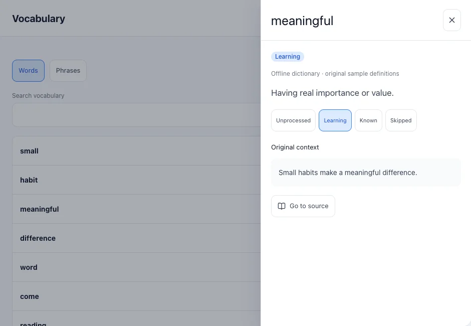
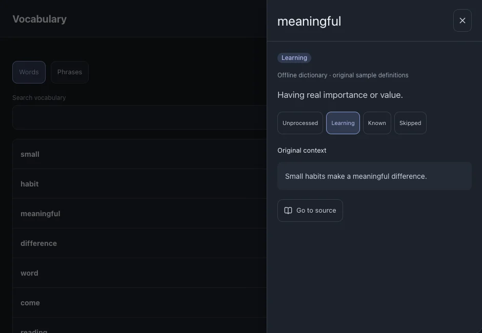

Vocabulary and phrases
Manage words and phrases collected from your subtitles. Each entry keeps its source so you can return to the original sentence.
On this page
Find an entry
- Open Vocabulary and choose Words or Phrases.
- Search for an entry or filter by learning status. Check the current learning language if an entry is missing.



Change a status
- Open an entry and choose the appropriate status. Use the selection tools when changing several entries.
- Words marked Learning become candidates for review; the scheduler determines when they are due.
See alsoReview
Return to the original sentence
- Open the entry’s source or occurrence list.
- Choose a file and sentence to return to reading at that location.